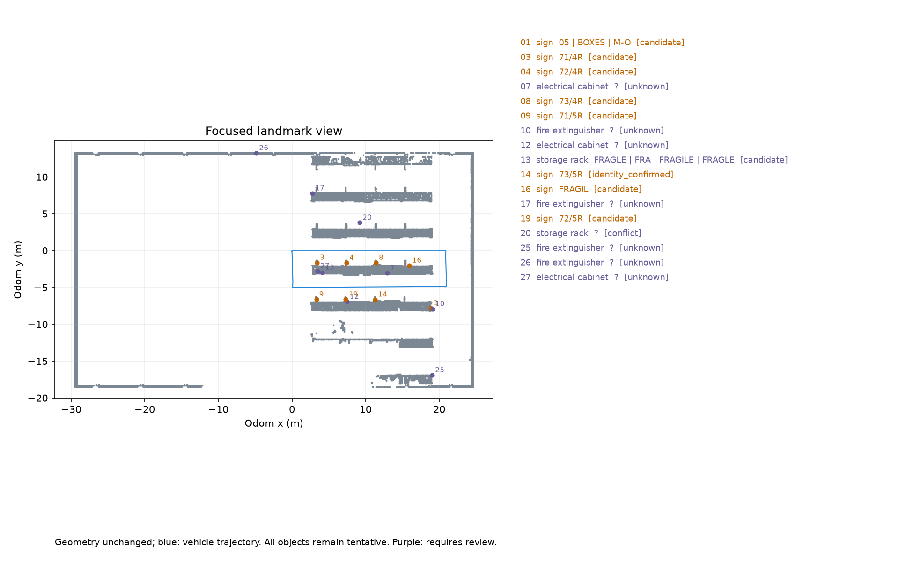
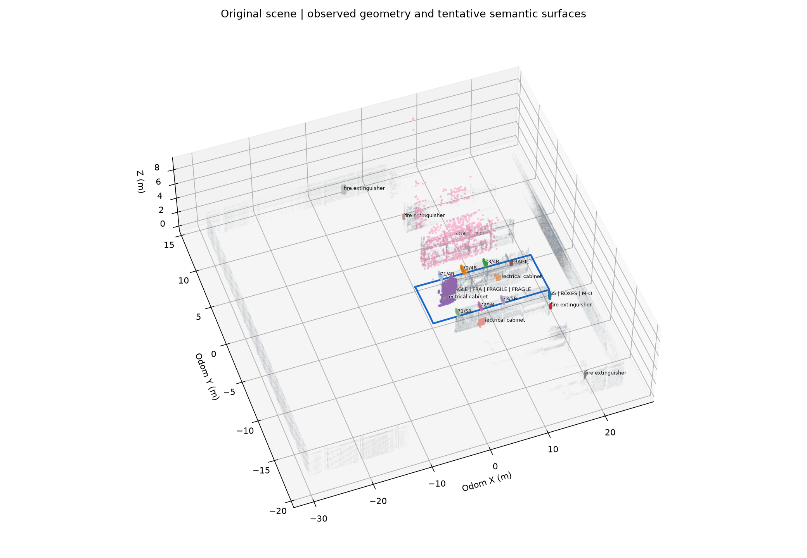

真实原场景重新绕环：InternVL 实例筛选 → YOLO-E mask → RGB-D 投影 → 异步 PP-OCRv5 文字绑定 → 持久地图。没有导航问答或 Flow 控制。
完成一圈 51.59 m；采集 448 帧；原始地标 27 个，后处理显示 17 个。全部为待确认候选，未测量识别准确率。
本次统计 · 全部地标与位置 · 完整地图归档 · 后处理证据 · 运行报告
左上相机，右上地图，左下全部检测，右下入图 mask。各面板异步；底部标明源帧。保留等待与结果滞后，不把视频帧率算作模型完成频率。
Isaac 原始 RGB 按仿真采样时间 5 Hz 编码；非桌面录屏。


黄色为检测框，绿色为被接纳的 mask，青色为文字区域。图片上的文字是原始读数，最终采用或拒绝情况见后处理报告。
{
"selection_mode": "instances",
"navigation_task_included": false,
"geometry_all_consumed": true,
"motion_seconds": 89.46048140525818,
"selection_completed_hz": 0.4024123214463727,
"geometry_hz": 4.98544153791895,
"mask_hz": 4.247685615267267,
"candidate_hz": 4.247685615267267,
"mask_p95_s": 0.566458594799042,
"admission_hz": 0.2906311210446025,
"admission_p95_s": 3.3686287999153137,
"ocr_p95_s": 3.5581160187721252,
"ocr_samples": 91,
"qa_samples": 46,
"candidate_all_completed_p95_s": 0.5894264459609986,
"text_all_completed_p95_s": 3.7845581054687494,
"candidate_completed_total": 383,
"candidate_deadline_misses": 34,
"text_deadline_misses": 26,
"ocr_binding_eligible_samples": 29,
"ocr_binding_completed_eligible": 29,
"ocr_binding_completed_eligible_fraction": 1.0,
"ocr_binding_timely_during_motion_fraction": 0.10344827586206896,
"ocr_model_completed": 91,
"ocr_model_completed_during_motion": 89,
"ocr_binding_applicable_during_motion": 26,
"ocr_binding_not_applicable_during_motion": 47,
"ocr_bindings_fraction_all_samples": 0.2857142857142857,
"ocr_model_completion_fraction_during_motion": 0.978021978021978,
"text_updates_during_motion": 26,
"source_frame_only": true,
"mask_completed": 380,
"drops": {
"seg": 65,
"qa": 0,
"ocr": 0
},
"formal_admitted_instances_during_motion": 50,
"browser_paint_latency_measured": false,
"publication_boundary": "files ready to read; candidate and admitted separate",
"candidate_timing_pass": false,
"ocr_timing_pass": false,
"timing_pass": false
}